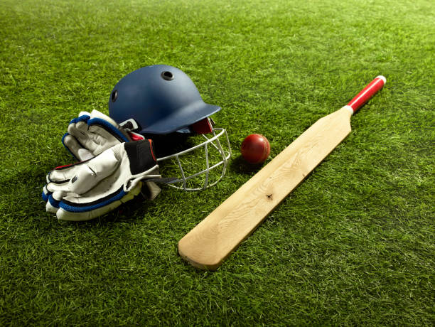
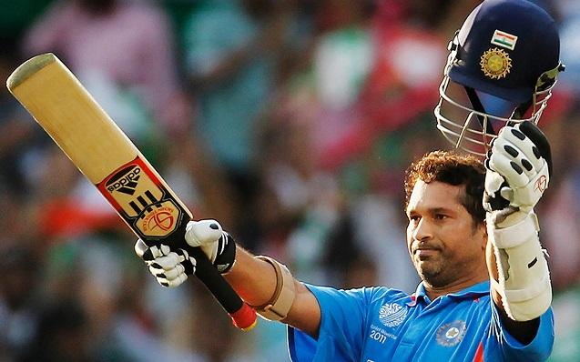

Информация о крикете

Крикет — это командная игра, популярная во многих странах, особенно в Великобритании, Австралии, Индии, Пакистане и других странах Содружества наций. В крикете используется мяч, бита и две команды, которые чередуются в нападении и защите.
Основные правила крикета:
Поляна:
Игра проводится на овальной поляне, центр которой занят мячом и битой, а вокруг находятся разные зоны для бега.
Команды:
В крикете две команды — битующая и бросающая. Битующая команда пытается набрать очки, бросая мяч и бегая по полосам. Бросающая команда пытается выбить биту и вывести из игры битующих игроков.
Бита и мяч:
Бита служит для удара мяча. Мяч бросается боулером (игроком из бросающей команды) в сторону битующей команды.
Очки:
Битующая команда набирает очки, бегая между двумя концами поляны. Они могут набирать один, два, три или четыре очка, а также шесть очков за удар за пределы поляны.
Выбивание:
Цель бросающей команды — выбить биту или вызвать ошибку битующей команды. Если бита поймана на лету, битующий игрок считается выбывшим.
Ауты:
Когда игрок из битующей команды выбывает, это называется "аутом". Количество аутов определяет, сколько переходов между битующей и бросающей командами произошло.
Оверы:
Овер составляет 6 бросков мяча одним боулером. После каждых 6 бросков сменяется боулер.
Тестовый крикет, однодневный и Twenty20:
Существует несколько форматов крикета, включая тестовый крикет (игры продолжительностью до 5 дней), однодневный крикет (игры, которые завершаются в течение одного дня) и Twenty20 (игры с очень короткими раундами).
Крикет имеет огромную популярность во многих странах, и играя в него, команды соревнуются за достижение высоких результатов и ведут захватывающие матчи.
советы

Стать профессиональным игроком в крикете требует усиленной тренировки, таланта и посвящения. Вот некоторые шаги, которые вы можете предпринять, чтобы начать карьеру в этом виде спорта:
Определите свой уровень интереса и таланта:
Если вы страстно увлечены крикетом и обладаете способностями в этом направлении, это хороший старт.
Присоединитесь к местной команде:
Начните играть в крикет в своей местной команде или школьной команде. Это даст вам опыт игры в формальных матчах и возможность показать свой потенциал.
Тренировка:
Регулярная физическая подготовка, тренировки бега, работы над техникой удара и броска мяча являются неотъемлемой частью тренировок игрока в крикет.
Обучение под руководством тренера:
Присоединитесь к клубу или академии, где работают квалифицированные тренеры. Они помогут вам развивать свои навыки и технику.
Участие в молодежных турнирах:
Многие страны организуют молодежные турниры и соревнования по крикету. Участие в таких соревнованиях может дать вам широкую видимость и возможность для развития.
Построение портфолио:
Если вы достигли хороших результатов в молодежных лигах и турнирах, это поможет вам предоставить свои достижения и навыки при подаче заявок на высшие уровни игры.
Участие в селекционных сборах:
Многие страны имеют систему селекции игроков для различных уровней. Если вы показываете хорошие результаты, вас могут пригласить на селекционные сборы.
Возможности для игры на высшем уровне:
Если вас выбирают на высшие уровни, такие как региональные команды или даже сборные команды вашей страны, это отличная возможность показать свои навыки на мировой арене.
Образование:
Не забывайте об образовании. Для большинства игроков крикет становится их профессией, но иметь образование также важно для будущего.
Стойкость и решимость:
Путь к профессиональному крикету может быть сложным и полным трудностей. Важно сохранять стойкость, упорство и веру в свои способности.
Запомните, что дорога к профессиональному крикету требует времени, усилий и постоянного самосовершенствования.